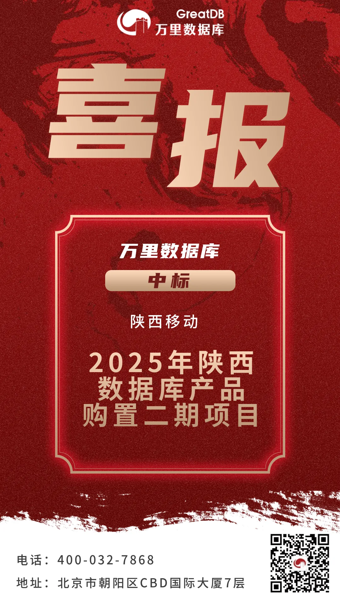
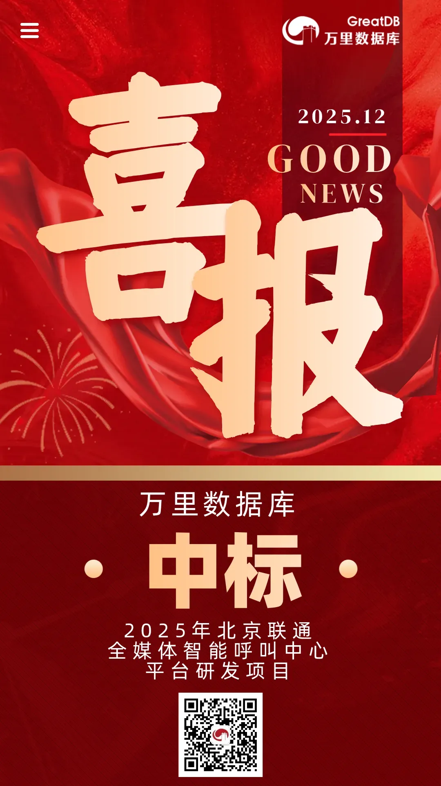

喜报 | 运营商双中标！万里数据库再度携手陕西移动 成功落地北京联通
深耕运营商，市场再传捷报！
近日，万里数据库在运营商核心市场连续突破，成功中标陕西移动2025年数据库产品购置二期项目与北京联通全媒体智能呼叫中心平台研发项目。此次“双中标”不仅体现了头部运营商对万里数据库产品技术实力与服务能力的持续信赖，更标志着公司在推动关键行业基础设施数字化与自主化进程上取得了又一重要突破。
1 再度携手 实现IT系统全域覆盖
在陕西移动合作中，本次项目中标意义非凡——这是双方继一期项目成功合作后的再度携手。万里数据库产品将全面应用于陕西移动的网络管理、客户响应、网络优化等核心业务场景，支撑其近20个关键业务系统的稳定高效运行。
凭借高性能、高可靠的万里安全数据库GreatDB，此次合作对陕西移动IT系统实现了全域覆盖，从后台运维到前台服务，为其数字化转型构筑了统一、坚实的数据底座。

2 平台赋能 打造新一代客户联络中心
在北京联通方面，中标项目直指其数字化服务前沿——全媒体智能呼叫中心平台的研发。该平台作为联通数字化服务的核心载体，对数据库的实时处理、高并发支撑及稳定性有极高要求。
万里数据库的引入，将为该平台提供坚实的数据核心，助力北京联通构建一个更智能、更弹性、体验更优的新一代客户联络中心，驱动其客户服务与业务运营的全面革新。

两大运营商标杆 意义重大
本次连续中标两大运营商标杆项目，意义重大。它不仅验证了万里数据库产品在运营商最复杂核心业务场景中的全面支撑与替代能力，也为公司积累了宝贵的行业口碑与实践经验。
未来，万里数据库始终持续深耕，将经过大规模严苛场景验证的数据库产品与解决方案，推广至更广泛的金融、政企、医疗、教育等关键领域，赋能千行百业数字化转型与核心系统升级。